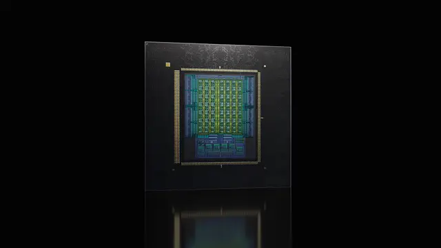

NVIDIA / その他
SpaceXAIがNVIDIA Vera採用、AIエージェント基盤を宇宙へ拡張

NVIDIAは2026年8月24日、SpaceXAIが次世代のエージェント型AI基盤に「NVIDIA Vera CPU」を採用すると発表しました。Grokを支えるAIインフラをVera Rubinプラットフォームへ拡張し、将来的には同じ計算アーキテクチャを軌道上のAI衛星「Starmind」に展開する計画です。
QUICK READ
この記事の要点
AIエージェントではCPU性能が再び重要に
大規模言語モデルの推論ではGPU性能が注目されがちですが、エージェント型AIではモデル呼び出しの間に、ツール利用、コード実行、データ処理、シミュレーション、複数処理のオーケストレーションが発生します。 VeraはこうしたCPU負荷の高い処理を前提に設計されています。88基のNVIDIA設計「Olympus」コア、Spatial Multithreading、高帯域LPDDR5Xメモリを備え、メモリ帯域幅は最大1.2TB/sです。NVIDIAによると、エージェント型AIや強化学習、データ処理などでx86 CPU比最大1.8倍高速にタスクを完了できるとしています。 狙いはCPU単体の高速化だけではありません。CPU側でAIエージェントの周辺処理を高速にさばき、GPUを待機させず高い稼働率を維持…
Grok基盤をギガワット級へ
SpaceXAIはGrok向けインフラを「NVIDIA Vera Rubin」へ拡張し、ギガワット級の計算能力を目指します。 Vera RubinはCPUとGPUだけでなく、NVLinkによる高速インターコネクト、Spectrum-X Ethernet、BlueField DPU、NVIDIAのソフトウェア群まで一体設計したAIファクトリー向け基盤です。個々のチップ性能ではなく、データセンター全体の性能、電力効率、GPU利用率、トークン当たりのコストを最適化する考え方が中心となっています。
同じAI基盤を軌道上へ
さらに注目されるのが、SpaceXAIが開発する第1世代Starmind AI衛星です。計画では、最適化したVera Rubin NVL72ラックスケールシステムを基礎として、軌道上コンピューティング向けに適応します。 宇宙では電力供給、放熱、通信帯域、信頼性、物理的な搭載制約が地上データセンターとは大きく異なります。そのため、地上向けNVL72をそのまま宇宙へ持ち込むのではなく、NVIDIAとSpaceXAIが共通のアーキテクチャとソフトウェア環境を維持しながら最適化する方針です。
Discord掲載記事からの抜粋です。詳細・文脈は全文と出典をご確認ください。
出典・参考リンク
日付はAFNJPへの掲載日です。発表元の公開日とは異なる場合があります。